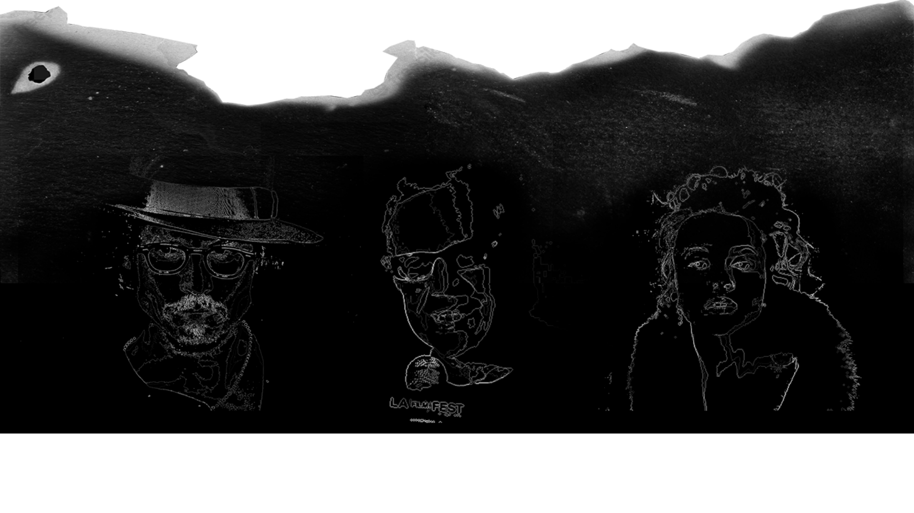

Tilbagevendende samarbejdspartnere (klik her)
Johnny Depp er en skuespiller, som har medvirket i
flere af Burtons film. De har været gode kammerater siden den første
film de lavede sammen.
Danny Elfman er en komponist, som har komponeret
musikken til størstedelen af Burtons film.
Helena Bonham Carter, en kvindelig skuespiller, som
også ses i flere af Burtons film. Gennem årene har de knyttet tætte
bånd, og de dannede i en årrække par. Sammen har de to børn.